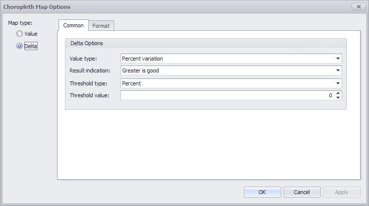
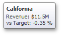
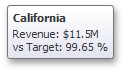
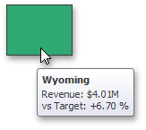
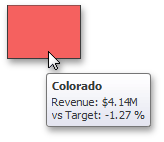
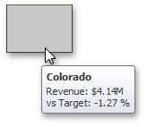
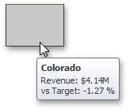

Delta
The Choropleth Map allows you to indicate the difference between the actual and target values of a particular parameter. This difference is called delta.

Delta Options
To specify delta indication settings, click the Options button next to the data item container.

This invokes the Choropleth Map Options dialog. When the map type is set to Delta, this dialog contains the following settings.

Value Type
You can specify which values to display within map tooltips. Use the Value type combo box to select the value that will be displayed as the delta value.
Value Type Tooltip Actual value 
Absolute variation 
Percent variation  Percent of target  Result Indication
You can specify the condition that will be used to select the indicator color. To do this, use the Result indication combo box.
Result Indication Area Color Greater is good  Less is good 

Warning if greater  
Warning if less 

No indication Threshold type and Threshold value
You can specify that a required indicator should only be displayed when the difference between the actual and target values exceeds a specified value. For instance, the actual value exceeds the target value by 10%, or by $2K.
Use the Threshold type combo box to select whether you wish to specify the threshold in percentage values or in absolute values. Then use the Threshold value box to specify the threshold value.
The Format tab allows you to specify the numeric display formats for for different value types, as described in the Formatting Data document.

The tab contains the following settings.
- Format type - Specifies format types for numeric values.
- Unit - Specifies the unit to convert the numeric values.
- Precision - Specifies the number of fractional digits to display.
- Currency - Specifies the currency symbol and format provided by the current culture settings.
- Culture - Specifies the name of a culture that defines the currency symbol and format.
- Include group separator - Specifies whether separators should be inserted between digit groups.